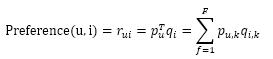
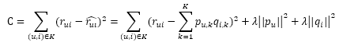
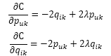
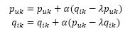
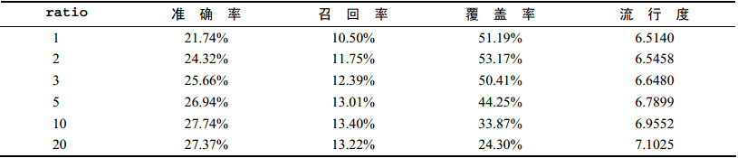
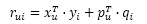

五、 隐语义模型
LFM（latent factor model），最早在文本挖掘领域被提出，用于找到文本的隐含语义。相关的名词有LSI、pLSA、LDA、Topic Model。
1. 基础算法
核心思想：通过隐含特征（latent factor）联系用户兴趣和物品。
(1) 一个新的推荐方法及细分
除了UserCF和ItemCF，也可以先对物品分类，再根据就某个特定用户的兴趣分类挑选他可能喜欢的物品。
这个方法需要解决：
a. 如何给物品进行分类？
b. 如何确定用户对哪些类的物品感兴趣？感兴趣程度多大？
c. 对于一个给定的类，选择哪些属于这个类的物品推荐给用户，以及如何确定这些物品在一个类中的权重？
对于第一个问题，在图书分类界有“中国图书分类法”，但设定一种分类法还是存在如下问题：
a. 编辑的意见不能代表各种用户的意见
b. 编辑很难控制分类的粒度
c. 编辑很难给一个物品多个分类
d. 编辑很难给出多个维度的分类
e. 编辑很难决定一个物品在某一个分类中的权重
(2) 隐语义模型
基于用户行为统计的自动聚类。从数据触发，自动地找到那些类，然后进行个性化推荐。很好地解决了上面5个问题。
隐语义分析技术产生了很多著名的模型和方法，其中和该技术相关且耳熟能详的有pLSA、LDA、隐含类别模型、隐含主题模型、矩阵分解。本章通过LFM为例介绍隐含语义分析技术在推荐系统中的应用。
LFM通过如下公式计算用户u对物品i的兴趣：

pu,k：用户u的兴趣和第k个隐类的关系
qi,k：第k个隐类和物品i的关系
（这两个参数要通过学习一个训练集来获得，对于每个用户u，这个训练集既要包括u喜欢的物品，又要包括u不感兴趣的物品）
推荐系统的用户行为分为显性反馈和隐性反馈，LFM在显性反馈上解决评分预测问题并达到了很好的精度。不过隐性反馈只有正样本（用户喜欢什么），没有负样本（用户不喜欢什么）。在隐性反馈数据集上应用LFM解决topN推荐的第一个关键问题就是如何给每个用户生成负样本。
通过2011年的KDD Cup的Yahoo!Music推荐系统大赛，发现负样本采样时应该遵循以下原则：
a. 对每个用户，要保证正负样本的平衡（数目相似）
b. 对每个用户采样负样本时，要选取那些很热门，而用户却没有行为的物品。
(3) 隐语义模型两个参数的推导
根据流行度采样出那些热门但用户却没有过行为的物品，得到了一个用户-物品集K={(u,i)}，其中如果(u,i)是正样本，则有 ，否则 。然后，需要优化如下的损失函数来找到最合适的参数p和q：

λ||pu||2+λ||qi||2是用来防止过拟合的正则化项， 可以通过实验获得。要最小化上面的损失函数，可以利用随机梯度下降算法（最优化理论里最基础的优化算法，它首先通过求参数的偏导数找到最速下降方向，然后通过迭代法不断地优化参数）。
首先，对两组参数pu,k和qi,k求偏导数可得：

然后，根据随机梯度下降法，需要将参数沿着最速下降方向向前推进，因此可以得到如下递推公式：

其中， 是学习速率，它的选取需要通过反复试验获得。
(4) 隐语义模型测评结论
通过实验对比了LFM在topN推荐中的性能。在LFM中，重要的参数有4个：
a. 隐特征个数F
b. 学习速率
c. 正则化参数
d. 比例ratio
通过实验发现：ratio参数对LFM的性能影响最大。因此，固定F=100、α=0.02、λ=0.01，然后研究ratio对推荐结果的影响如下图：

通过上图发现如下结论：
a. 随着负样本数目的增加，LFM的准确率和召回率有明显提高，但ratio>10以后就比较稳定了。
b. 随着负样本数目的增加，覆盖率不断下降，而推荐结果的流行度不断增加，说明ratio参数控制了推荐算法发掘长尾的能力。
c. LFM在所有指标上都优于UserCF和ItemCF，但后续实验发现：当数据集非常稀疏时，LFM的性能会明显下降。
2. 基于LFM的实际系统的例子
LFM在实际应用中存在的问题：
a. 训练很耗时（因为要反复迭代才能获得较好性能）
b. 不能因为用户行为的变化实时地调整推荐结果
c. 在新闻推荐中，冷启动非常明显（新闻不可能刚一发布就能获得兴趣信息）
雅虎的解决办法：
首先，利用新闻链接的内容属性（关键词、类别等）得到链接i的内容特征向量 。其次，他们会实时地收集用户对链接的行为，并且用这些数据得到链接i的隐特征向量 。然后，他们会利用如下公式预测用户u是否会单机链接i：

其中， 是根据物品的内容属性直接生成的， 是用户u对内容特征k的兴趣程度，用户向量 可以根据历史行为记录获得，而且每天只需要计算一次。而 、 是根据实时拿到的用户最近几小时的行为训练LFM获得的。因此，对于一个新加入的物品i，可以通过 估计用户u对物品i的兴趣，然后经过几小时后，就可以通过 得到更加准确的预测值。
3. LFM和基于邻域的方法的比较
(1) 理论基础
LFM有学习过程，基于邻域没有。
(2) 离线计算的空间复杂度
基于邻域需要维护一张离线的相关表，LFM大量节省了训练过程中的内存。
(3) 离线计算的时间复杂度
LFM时间复杂度要稍高于基于邻域，因为要迭代多次。
(4) 在线实时推荐
基于邻域在内存中维护了一张相关表，可以实时在线推荐，LFM则不能实时推荐。
(5) 推荐解释
ItemCF支持很好的推荐解释，LFM则无法提供。